Céluma · Laboratorio visual · experimento 02
Isotipo vectorial: maestro, paleta aprobada y mini sistema del logo
Maestro SVG editable del isotipo, ajustado al raster original. Rafael aprobó el maestro, el wordmark A · Baloo 2 800 y las direcciones de animación el 2026-09-26, y el 2026-09-27 la paleta final, aplicada a todas las piezas de este experimento. La fuente activa es master/celuma-isotipo-maestro-paleta-aprobada.svg; el maestro fiel al PNG se conserva como evidencia del ajuste geométrico. Aprobado en el laboratorio; la incorporación canónica sigue pendiente. Leer la decisión y los pasos de incorporación.
#49B6AD
Citoplasma#BBEAD2
Núcleo#F98D84
Nucléolo#E5635F
Rayos#F1C46C
Wordmark A#0D1B2A
Antes / después, misma caja y resolución
Izquierda: PNG fuente. Derecha: el SVG activo con la paleta aprobada (master/celuma-isotipo-maestro-paleta-aprobada.svg) o, con el selector, el maestro fiel histórico (master/celuma-isotipo-maestro.svg). Los tres comparten viewBox 0 0 697 777, así que cualquier desalineación sería visible. Desliza el corte y cambia el fondo.

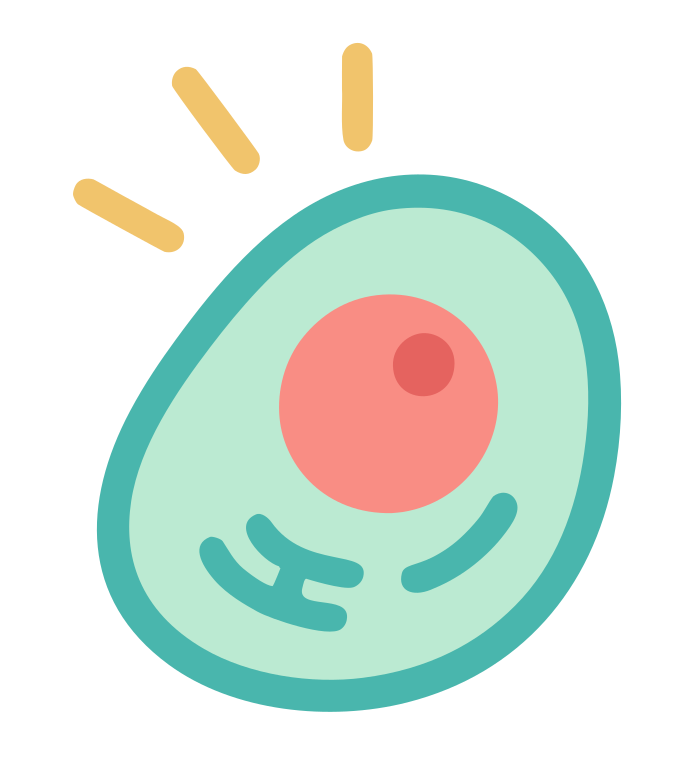
PNG fuenteSVG · paleta aprobadaCambio de tono deliberado. Con la paleta aprobada, membrana y trazos pasan de #3baca6 (medido en el PNG) a #49b6ad, y el núcleo de #f88e85 a #F98D84, para coincidir con los colores en uso en la interfaz. Citoplasma, nucléolo y rayos conservan el color medido. La diferencia de tono que se ve en membrana y núcleo no es un error de ajuste; la geometría es la misma.
Cómo se construyó
1. Colores: se midió cada región en su «meseta» (erosión de 4 px para excluir antialias y halo) y se buscó degradado lineal y radial. Esas medianas son la paleta del maestro fiel; la paleta aprobada del 2026-09-27 cambia después membrana/trazos y núcleo.
2. Bordes: para cada capa se calculó un campo continuo (alfa para silueta y rayos; proyección de color entre las dos tintas vecinas para membrana/citoplasma, núcleo, nucléolo y trazos) y su isolínea 0,5 con precisión subpíxel.
3. Curvas: Bézier cúbicas con nodos suaves y de esquina, insertados solo donde el error máximo lo exige; se detiene en el piso de ruido del raster (≤ 0,5 px).
4. Validación: Chromium rasteriza el maestro fiel a 697 × 777 con fondo transparente y se compara con el PNG (silueta, regiones, posiciones, ΔE00 sobre blanco, crema y navy). El maestro activo comparte trazados, orden y caja (scripts/check_paleta.py).
Herramientas ya instaladas: Python 3.10 de Homebrew (NumPy, SciPy, OpenCV, Pillow, fontTools) y el Playwright/Chromium de celuma-frontend. No se añadieron dependencias.
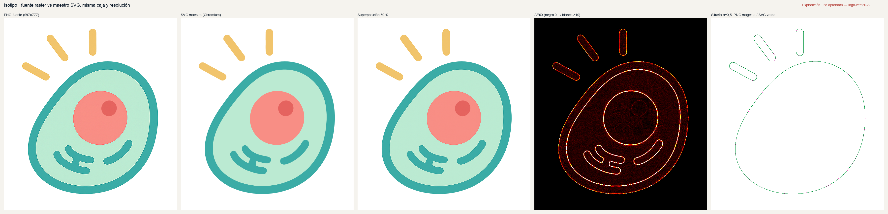
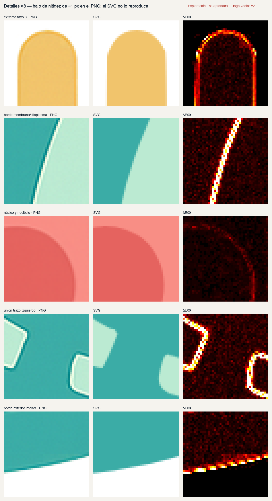
Qué tan fiel es el ajuste Evidencia histórica
Cifras de validation/metrics.json y validation/fit-report.json, medidas el 2026-09-26 con el maestro fiel histórico, renderizado con Chromium en la caja del PNG. Las cifras de forma (silueta, bordes, rayos, nodos) valen igual para el maestro activo, porque comparte la geometría. Las de color (ΔE00 0,52 en planos, 4,9 en bordes y 7,4 %) describen solo al maestro fiel: con la paleta aprobada, membrana y núcleo cambian a propósito y esas cifras no la miden.
| Región | Nodos | Ajuste al contorno (máx. / RMS) | IoU región | Área SVG/PNG | Centroide Δ (px) | Nota |
|---|---|---|---|---|---|---|
| Rayos (3) | 8 · 6 · 7 | 0,50 / 0,10 · 0,38 / 0,11 · 0,41 / 0,12 px | 0,993 | 0,999 | −0,25, +0,10 | Ejes 28,6° / 53,2° / 89,8° (±0,07°). Extremos a ≤ 0,20 px medidos sobre el eje; longitudes 0,1–0,2 px más cortas. |
| Membrana (contorno exterior) | 8 | 0,54 / 0,11 px | 0,995 | 1,000 | −0,07, +0,13 | Contorno orgánico inclinado, sin simplificar. |
| Citoplasma (borde interior) | 9 | 0,43 / 0,10 px | 0,998 | 1,000 | −0,03, −0,03 | El grosor variable de la membrana se conserva (dos contornos independientes). |
| Núcleo | 7 | 0,44 / 0,08 px | 0,9985* | 1,000* | +0,02, −0,06 | No es un círculo: un círculo daría RMS 0,79 px (máx. 1,4). *Medido sobre el campo de color. |
| Nucléolo | 3 | 0,33 / 0,12 px | 0,993 | 0,999 | −0,11, +0,03 | Un círculo daría RMS 0,36 px; se mantiene el trazado. |
| Trazos internos (2) | 16 · 9 | 0,53 / 0,14 · 0,51 / 0,10 px | 0,991 | 1,002 | −0,07, +0,03 | El trazo izquierdo es una sola forma (dos arcos unidos por el conector). |
Diferencias residuales (y por qué no es «100 % idéntico»)
- Halo de nitidez del PNG. Cada borde tiene ~1 px más oscuro del lado oscuro y ~1 px más claro del lado claro (sobreenfoque del generador). Es un artefacto de raster que depende de la escala; el vector da un borde limpio en la misma posición. Explica casi toda la diferencia de color (banda de borde ΔE00 4,9; interior 0,52).
- Grano y alfa interior. El PNG tiene grano de ~1 nivel por canal (ΔE00 p95 ≈ 1) y el alfa interior oscila entre 250 y 255 (media 254,7) con un parche de bloques opaco en el núcleo. El maestro usa tintas planas y opacidad 1.
- Membrana y trazos: en el PNG difieren 1 nivel (
#3baca6/#3cada7, ΔE00 0,3). El maestro fiel usa una sola tinta, la media ponderada#3baca6; la paleta aprobada usa#49b6aden ambos. - Precisión geométrica. La posición real del borde en un raster de 697 × 777 con antialias y ruido solo se conoce con ± 0,1–0,3 px. Por eso el objetivo fue quedar dentro de ese piso de ruido, no «0 px».
- Rayos: 0,1–0,2 px más cortos que en el PNG (dentro del piso de ruido). Una medición anterior por píxel extremo marcaba ~1 px en el rayo 3; era cuantización de la métrica, corregida con contornos subpíxel.
Color: PNG medido, vector aprobado y tokens en uso
Tres referencias distintas. PNG medido: medianas de cada región del raster original; el maestro fiel histórico las reproduce. Vector aprobado: la paleta que Rafael aprobó el 2026-09-27 y que usan todas las piezas activas. Tokens en uso: los colores de styles/celuma-tokens.css, que no se modificaron.
| Parte | PNG medido | Vector aprobado | Cambio | Relación con tokens en uso |
|---|---|---|---|---|
| Membrana y trazos | #3baca6 | #49b6ad | ΔE00 3,1 · cambio deliberado | --celuma-primary #49b6ad: mismo valor. --celuma-iso-outline #2fa7a5: ΔE00 5,2 |
| Citoplasma | #bbead2 | #bbead2 | sin cambio | --celuma-iso-fill #c8ecdc: ΔE00 3,75 (no coincide; no se usa) |
| Núcleo | #f88e85 | #F98D84 | ΔE00 0,3 · cambio deliberado (imperceptible) | --celuma-secondary #F98D84: mismo valor. --celuma-iso-nucleus #e58a8a: ΔE00 4,8 |
| Nucléolo | #e5635f | #e5635f | sin cambio | sin token equivalente |
| Rayos | #f1c46c | #f1c46c | sin cambio | --celuma-iso-rays #f0c75e: ΔE00 3,17 (no coincide; no se usa) |
| Wordmark A | — | #0d1b2a | — | --celuma-ink #0d1b2a: mismo valor. El Logotipo V2 de Notion mide #0d1f40 (ΔE00 7,9, más azul) |
Por qué cambió el tono
El maestro fiel conservaba el color medido del PNG. Rafael aprobó ajustar membrana, trazos y núcleo a los colores que ya usa la interfaz (--celuma-primary y --celuma-secondary) para que logo y producto coincidan. La membrana pasa a un teal algo más claro (ΔE00 3,1, visible de cerca); el cambio del núcleo (0,3) no se percibe. Citoplasma, nucléolo y rayos conservan el valor medido.
Se probaron y descartaron un citoplasma #7dd8d9 y unos rayos ámbar #f4bd5a; quedan solo en el historial de la decisión.
Qué no cambia
Trazados, recortes y proporciones. La paleta se aprobó para el laboratorio: los tokens --celuma-iso-* siguen sin coincidir con el isotipo y no se tocaron. Actualizar tokens o assets canónicos es un cambio aparte, igual que la adopción en la app, el landing o impresos.
Contraste de la membrana aprobada: 2,45:1 sobre blanco, 2,27:1 sobre crema y 7,1:1 sobre navy. Es una marca gráfica, no texto ni una señal de estado.
Método de medición del PNG: mediana por canal en la meseta de cada región (erosión 4 px); desviación típica ≈ 1 nivel; no hay degradado (variación lineal o radial ΔE00 ≤ 0,44, menor que el grano). Valores CMYK/Pantone: pendientes (requieren prueba de imprenta). Datos: validation/color-analysis.json y master/celuma-paleta-aprobada.json.
Tamaños 16–256 px sobre blanco, crema y navy
PNG fuente y SVG con la paleta aprobada, rasterizados por el mismo navegador en cajas cuadradas de N × N. Cada celda muestra 1:1 y, hasta 32 px, una ampliación ×4 sin suavizado para inspeccionar píxeles. La diferencia de tono en membrana y núcleo es el cambio deliberado de la paleta. Con el maestro fiel histórico, el ΔE00 medio PNG↔SVG sobre blanco era 3,8 a 16 px, 3,5 a 20, 2,3 a 32, 1,2 a 64 y 0,87 a 256 px; esas cifras no se aplican a la paleta aprobada.
| Tamaño | PNG · blanco | SVG aprobado · blanco | PNG · crema | SVG aprobado · crema | PNG · navy | SVG aprobado · navy |
|---|
A 16–20 px los rayos quedan por debajo de 1 px de ancho y los trazos internos se vuelven ruido en ambos (PNG y SVG). Por eso existe la versión reducida (adaptación) para 16–24 px; ver tamaños mínimos.
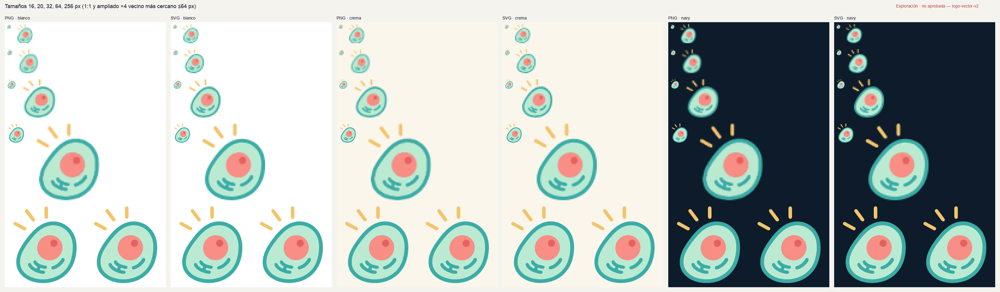
validation/lamina-tamanos-fondos.png.Familia del isotipo
Aprobado = geometría del maestro con la paleta aprobada. Adaptación = misma geometría con otro tratamiento, o geometría modificada para tamaño pequeño. Las adaptaciones no son idénticas al isotipo.
AprobadoColor

Uso general, con la paleta aprobada. Funciona en blanco, crema y navy sin variante «negativa»: la membrana teal delimita la célula en claro (2,3–2,5:1) y en navy (7,1:1).


AdaptaciónUna tinta sólida
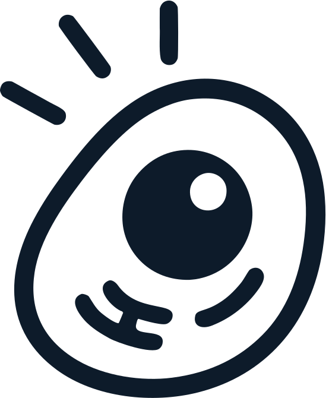
Para sellos, grabado, láser, bordado o fax. Citoplasma transparente, núcleo lleno con el nucléolo calado. Cambia la lectura (el núcleo pesa más que en color).


AdaptaciónUna tinta con tramas
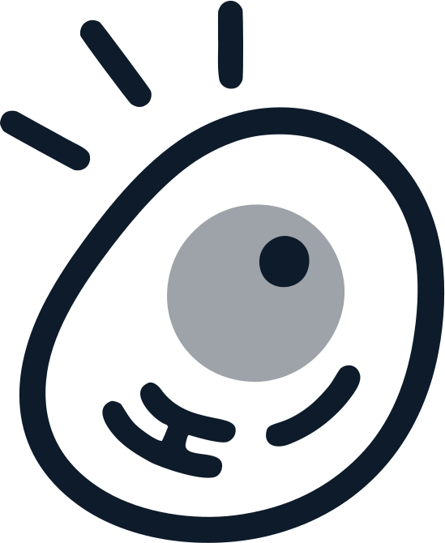
Para pantalla u offset con tramas: núcleo al 40 %, nucléolo al 100 %. Conserva el orden tonal del color. Preferible a la sólida cuando el medio lo permite.


AdaptaciónReducido 16–24 px

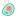
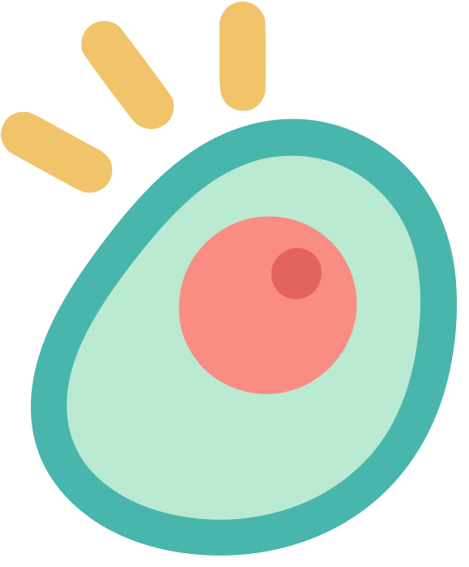
Mismas posiciones; rayos y membrana engrosados, trazos internos omitidos. Solo entre 16 y 24 px (favicon, pestañas). No es el isotipo.


Wordmark y lockups · A aprobado
Ambas opciones usan el mismo maestro y las proporciones medidas en el Logotipo V2 de Notion (altura de C = 0,436 × isotipo, separación 0,139 ×, centro de la C 0,03 × por debajo del centro de la célula), para que la comparación aísle la tipografía. El vertical no tiene referencia histórica y requiere revisión por medio. A · Baloo 2 800 aprobado
A · Baloo 2 ExtraBold (en uso) Aprobada


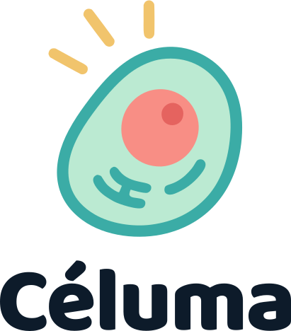
Tipografía: Baloo 2 v1.700 (Ek Type · Sarang Kulkarni), SIL Open Font License 1.1: uso comercial, incrustación y contorneado permitidos sin costo. wght 800, interletraje de Chromium, tracking −0,02 em como el landing. Contornos exactos de la fuente (comprobado contra el texto vivo).
B · Lettering del Logotipo V2 de Notion Archivo comparativo
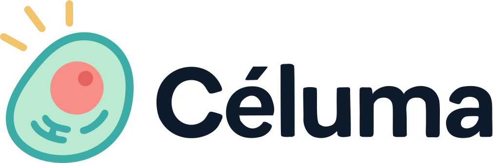
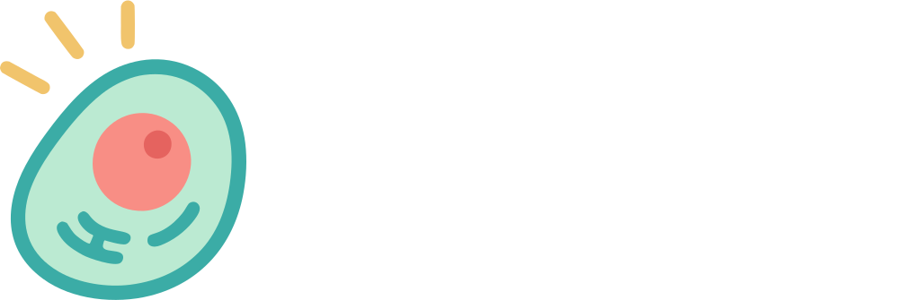
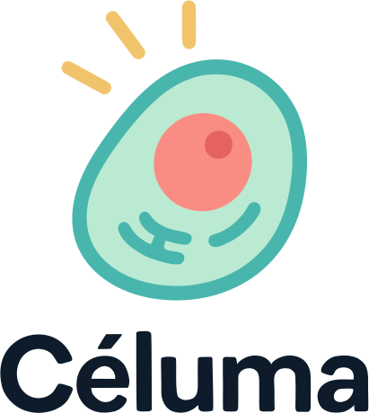
Tipografía: no identificada. Celuma_Logotipo_V2.png es una imagen sin metadatos de fuente; su lettering coincide con el del Banner V2 (IoU por glifo 0,983), pero ninguna sans abierta probada pasa de 0,89 (DM Sans 800 0,890 · Figtree 700 0,882 · Plus Jakarta Sans 800 0,881 · Inter 700 0,876). Aquí se muestra el trazado del raster (102 nodos, error máx. 0,64 px), no una fuente con licencia.
| Criterio | A · Baloo 2 | B · Lettering V2 |
|---|---|---|
| Origen verificable | Fuente publicada, versión y autoría conocidas | Imagen; tipografía y procedencia sin documentar |
| Licencia | SIL OFL 1.1 | Desconocida (no hay archivo de fuente) |
| Dónde se usa hoy | App, landing, docs y lienzos (texto vivo) | Solo en Notion («Versión final») |
| Extensible (descriptores, submarcas, otros pesos) | Sí, con la misma familia | No sin redibujar cada letra nueva |
| Relación con el isotipo | Terminales redondeados como los rayos y trazos | Grotesca geométrica más neutra; esquinas suavizadas |
| Legibilidad mínima comprobada | Horizontal ≥ 80 px de ancho; vertical ≥ 64 px de alto | Igual (misma altura x ± 2 %) |
| Costo de adopción | Nulo: ya está en las cuatro superficies | Cambiar cuatro superficies y resolver la fuente |
Decisión de Rafael: A · Baloo 2 800. Tiene fuente identificada y licencia clara, ya se usa en las superficies de Céluma y acompaña al isotipo. Sus proporciones de lockup toman como referencia el Logotipo V2. B se conserva solo como comparación histórica.
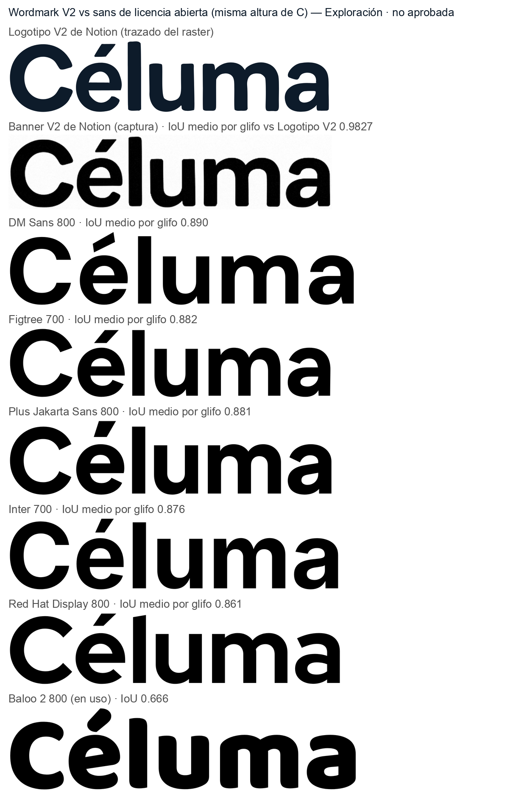
validation/font-match.json. Fuentes del sistema macOS (Avenir, Futura, Helvetica Neue) también probadas solo para identificar: ≤ 0,86.Reglas de uso Aprobadas para la identidad
Área de protección
X = ½ de la altura del isotipo (propuesta ya documentada en §8 de la revisión gráfica), libre de texto e imágenes en los cuatro lados. Se mide sobre la caja del dibujo, rayos incluidos.
Tamaños mínimos (pantalla, comprobados en Chromium 1×)
| Isotipo color | ≥ 24 px de alto | rayos ≥ 1 px de ancho |
| Isotipo reducido | 16–24 px | favicon, pestañas |
| Lockup horizontal | ≥ 80 px de ancho | altura x ≈ 8 px |
| Lockup vertical | ≥ 64 px de alto | altura x ≈ 8 px |
| Impresión | sin prueba física | la propuesta previa de 12 mm sigue sin verificar |
Fondos
Usos incorrectos
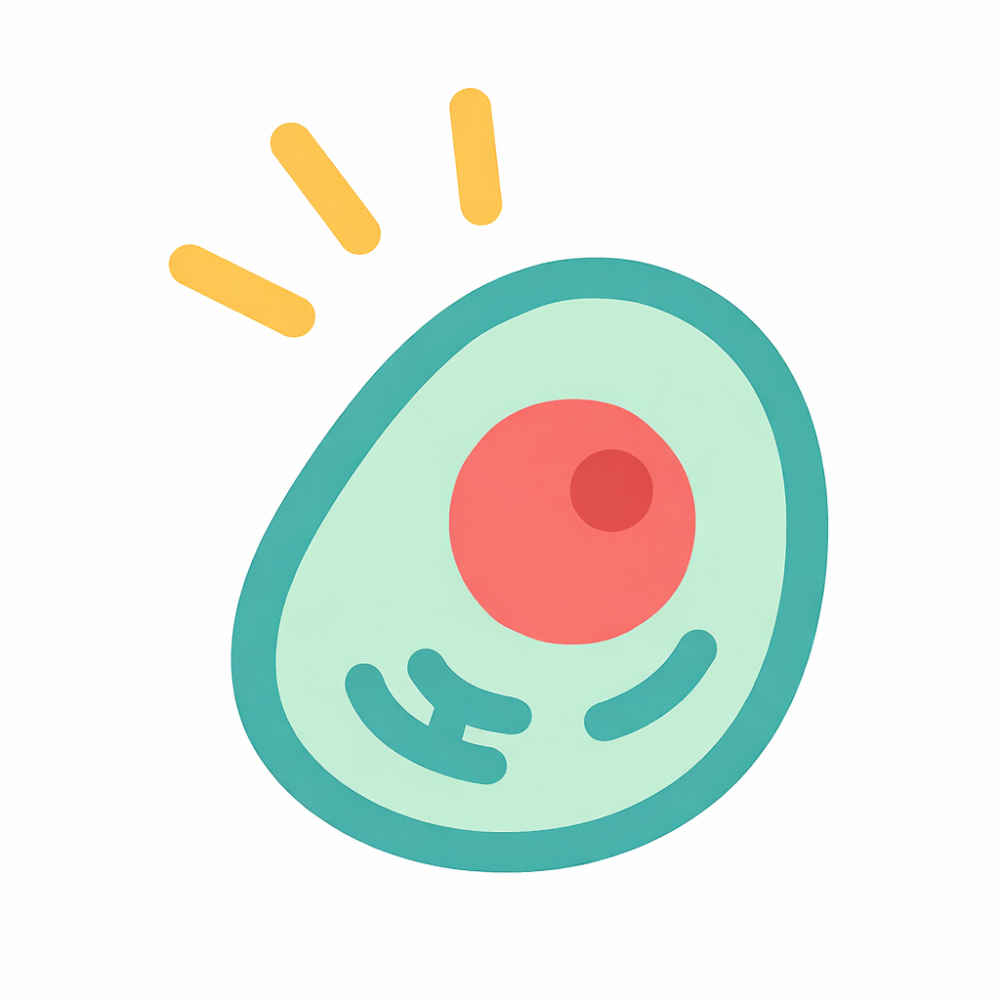
celuma-logo-v3.png (otro dibujo)Archivos de este experimento
Todo vive en labs/experiments/2-logo-vector-v2/. No se reemplazó ningún asset, token, lienzo ni archivo de frontend. Verificación de la paleta: scripts/check_paleta.py → validation/paleta-check.json. README · BRIEF · Brief de animación (fase 2)
Maestro e isotipo
- master/celuma-isotipo-maestro-paleta-aprobada.svg Fuente activa
- master/celuma-paleta-aprobada.json: la paleta, su aprobación y los valores medidos
- svg/isotipo/…-color.svg Aprobado
- master/celuma-isotipo-maestro.svg Fiel · histórico colores medidos del PNG; evidencia del ajuste
- svg/isotipo/…-ui.svg: alias de compatibilidad, mismo contenido que
…-color.svg - …-mono-navy.svg, …-mono-blanco.svg Adapt.
- …-mono-tramas-navy.svg, …-blanco.svg Adapt.
- …-reducido-16-24px.svg Adapt.


Wordmark A y lockups Aprobados
- svg/wordmarks/wordmark-a-baloo2-800.svg
- svg/wordmarks/wordmark-b-notion-v2-trazado.svg · archivo comparativo
svg/lockups/propuesta-a-baloo2/: familia A aprobada, 8 versiones.propuesta-b-notion-v2/: referencia tipográfica histórica, con el mismo isotipo.svg/lockups/ui-baloo2/: 4 alias de compatibilidad de los lockups A en color (ejemplo); mismo contenido, no son otra variantepng/lockups/…: los mismos 16 en PNG transparente (horizontal 1200 px de ancho, vertical 800 px de alto)


PNG e iconos
png/isotipo/: color 64 · 128 · 256 · 512 · 1024 px de alto; mono y tramas a 512- favicon-16 (reducido) · 32 · 48
- apple-touch-icon-180 · icon-192 · icon-512-maskable (fondo crema, opacos)
- Comprobación: lámina de exportaciones ·
validation/exports-check.json


Ejemplos de aplicación
Favicon en pestaña, login de la app, hero del landing y una pieza de comunicación, con datos ficticios, el lockup A y la paleta aprobada. Son maquetas: no sustituyen a la app ni al landing. Abrir ejemplos →
Fase 2 · isotipo animado Aprobada
Implementada sobre el maestro. La célula mira a la izquierda y a la derecha (solo se mueve el nucléolo), hace una pausa «eureka», aparecen los rayos y termina en el maestro activo exacto, con la paleta aprobada. Incluye Lottie de una reproducción y en bucle, SVG animado, vídeo de vista previa y validación con reproductores reales. Abrir la revisión de la animación → · README de la fase 2